| Metric | \(Q_{10}\) | \(2.5\% \atop \text{HPD}\) | \(\hat\beta_0\) | \(97.5\% \atop \text{HPD}\) | \(Q_{90}\) |
|---|---|---|---|---|---|
| Number of modes | 1.000 | 1.464 | 1.566 | 1.671 | 3.000 |
| Skewness | 0.059 | 0.471 | 0.542 | 0.615 | 1.342 |
| Excess kurtosis | -0.824 | 0.610 | 0.925 | 1.263 | 3.323 |
Statistical Practice in Psychology: The Numbers of the Beast
Andy Field
University of Sussex


|
Thanks
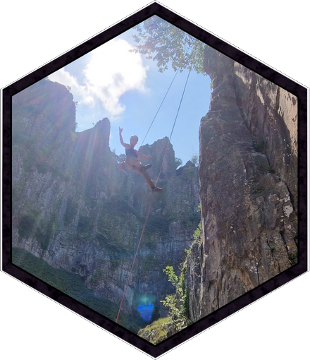
The Number(s) of the Beast
Can this still be real, or just some crazy dream?
Sources of Bias in OLS Estimation
Review
- Field A.P. (2026). Discovering statistics using R & RStudio. SAGE.
- Sladekova M, Field A.P. (2025). Robust statistical methods and the credibility movement of psychological science. PeerJ, 13:e20043. Doi: 10.7717/peerj.20043
- Influential cases
Assumptions
- Linearity and additivity
- The population model should have spherical errors:
- Homoscedastic errors
- Independent errors
- Normality of something-or-other
- Population model errors
- Sampling distribution
OLS: consequences of bias
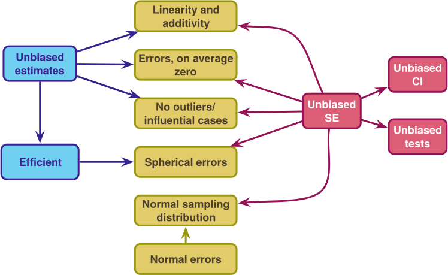
Robust procedures
- Robust parameter estimation
- M-estimation to down-weight extreme cases
- Huber’s \(\psi\) weight function
- The Design Adaptive Scale (DAS) estimator
- Trimming
- M-estimation to down-weight extreme cases
- Robust standard error estimation
- Heteroskedasticity-consistent standard errors (HC3, HC4)
- Derive SEs empirically using bootstrap resampling
- Generates Robust CIs and test-statistics
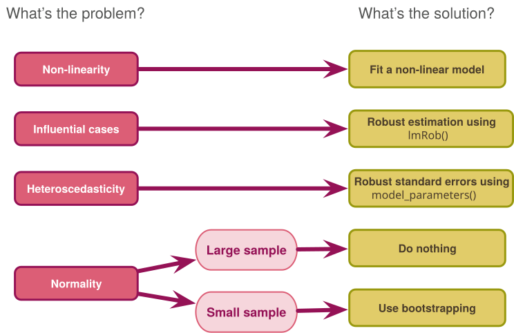
Psychology data
A review
- Sladekova, M., & Field, A. P. (2024). In Search of Unicorns: Assessing Statistical Assumptions in Real Psychology Datasets. PsyArxiv. DOI: 10.31234/osf.io/4rznt
- Past work suggests real data pose challenges to OLS assumptions (e.g., Micceri, 1989)
- We collected a sample of 588 OLS models from 119 published and unpublished papers
- Extracted and summarised distributional information from the model residuals
- Excess skew/kurtosis (\(E(\mu) = 0\))
- Number of modes
- Proportion of \(|z_\text{resid}|\) > 1.96 (5%), 2.58 (1%) and 3.29 (0.1%)
- Heteroscedasticity using Quantile LOWESS Intervals (QLI)^[Sladekova & Field (in press). Psychological Methods. DOI: 10.1037/met0000821. Zero indicates homoscedasticity.
Distributional properties
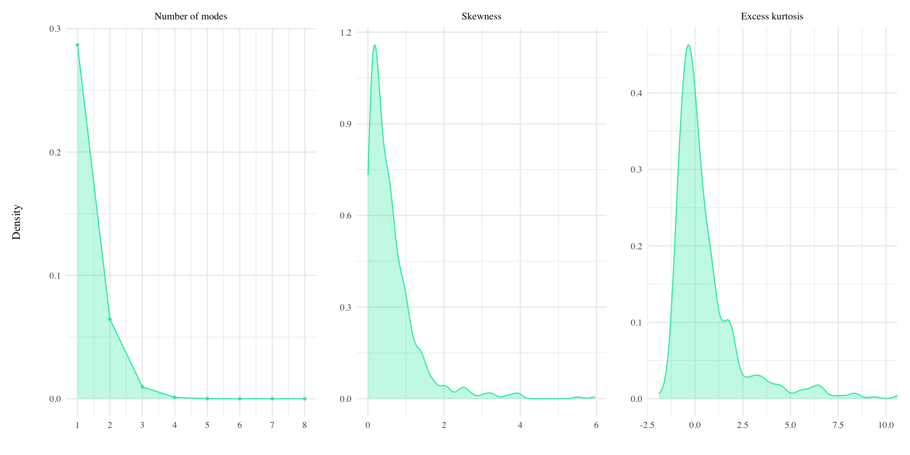
Distributional properties
Heteroscedasticity
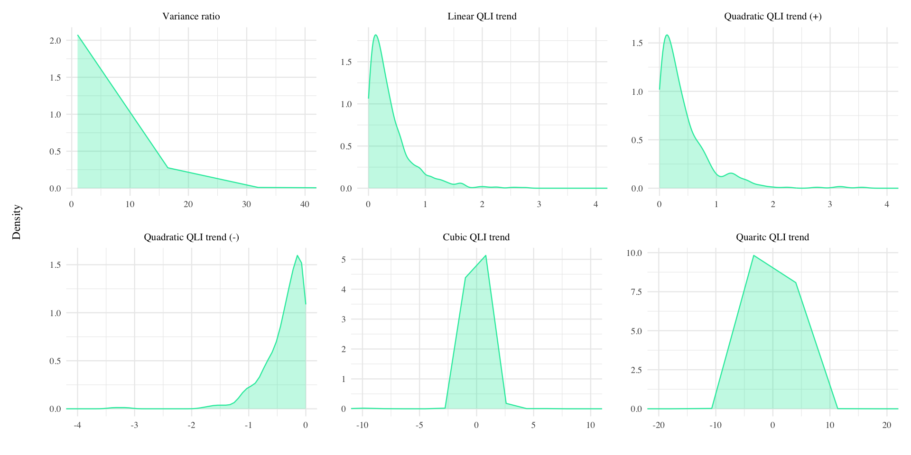
Heteroscedasticity
| Metric | \(Q_{10}\) | \(2.5\% \atop \text{HPD}\) | \(\hat\beta_0\) | \(97.5\% \atop \text{HPD}\) | \(Q_{90}\) |
|---|---|---|---|---|---|
| Variance ratio | 1.070 | 1.957 | 2.063 | 2.175 | 4.129 |
| Linear QLI | 0.041 | 0.312 | 0.380 | 0.455 | 0.912 |
| Quadratic QLI (pos) | 0.046 | 0.339 | 0.431 | 0.528 | 0.933 |
| Quadratic QLI (neg) | -0.841 | -0.230 | -0.344 | -0.452 | -0.045 |
| Cubic QLI | -0.276 | -0.038 | -0.010 | 0.016 | 0.309 |
| Quartic QLI | -0.187 | -0.016 | -0.005 | 0.006 | 0.157 |
Outliers
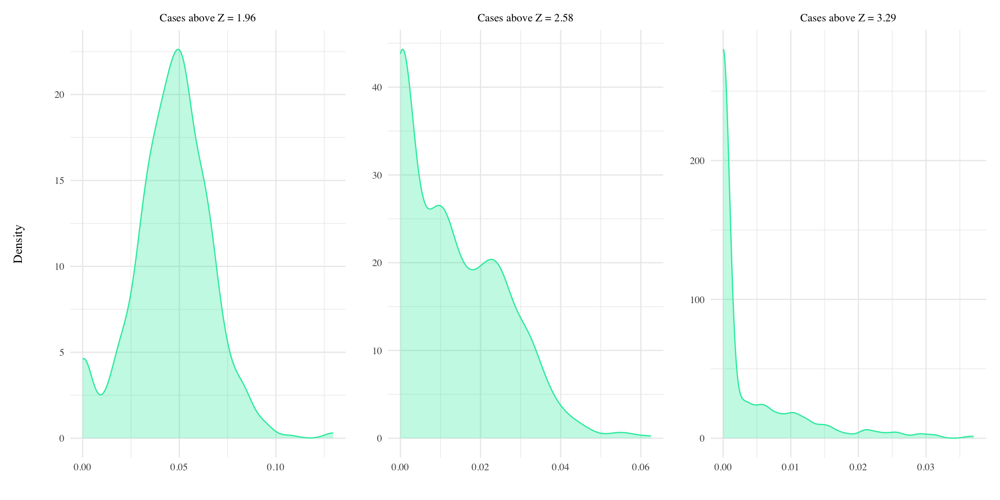
Outliers
| Metric | \(Q_{10}\) | \(2.5\% \atop \text{HPD}\) | \(\hat\beta_0\) | \(97.5\% \atop \text{HPD}\) | \(Q_{90}\) |
|---|---|---|---|---|---|
| Z > 1.96 | 0.021 | 0.046 | 0.048 | 0.050 | 0.069 |
| Z > 1.96 (zero inflation) | 0.032 | 0.049 | 0.067 | ||
| Z > 2.58 | 0.000 | 0.016 | 0.018 | 0.019 | 0.031 |
| Z > 2.58 (zero inflation) | 0.273 | 0.308 | 0.344 | ||
| Z > 3.29 | 0.000 | 0.008 | 0.010 | 0.011 | 0.013 |
| Z > 3.29 (zero inflation) | 0.601 | 0.641 | 0.679 |
OLS and psychology data
A simulation
- Sladekova, M., & Field, A. P. (2024). Commonly Used Statistical Models in Psychology are Not Equipped to Deal with Real-World Conditions: A Simulation. PsyArxiv. DOI: 10.31234/osf.io/xb4at
- Simulated > 97,000 combinations of conditions based on Sladekova & Field (2024)
- Looked at
- False positive rate
- Power
- Estimation accuracy
- Efficiency (dispersion)
- Compared estimators:
- OLS
- Bootstrap (BCA)
- HC4
- MM-Estimator
- DAS-estimator
tl;dr between-subjects cross-sectional designs
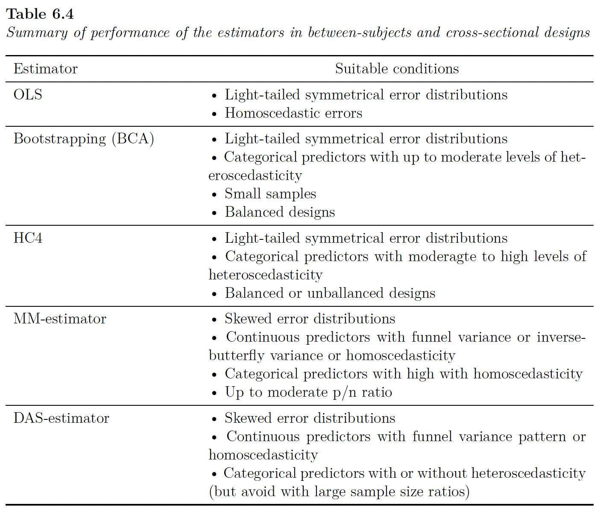
tl;dr repeated measures designs
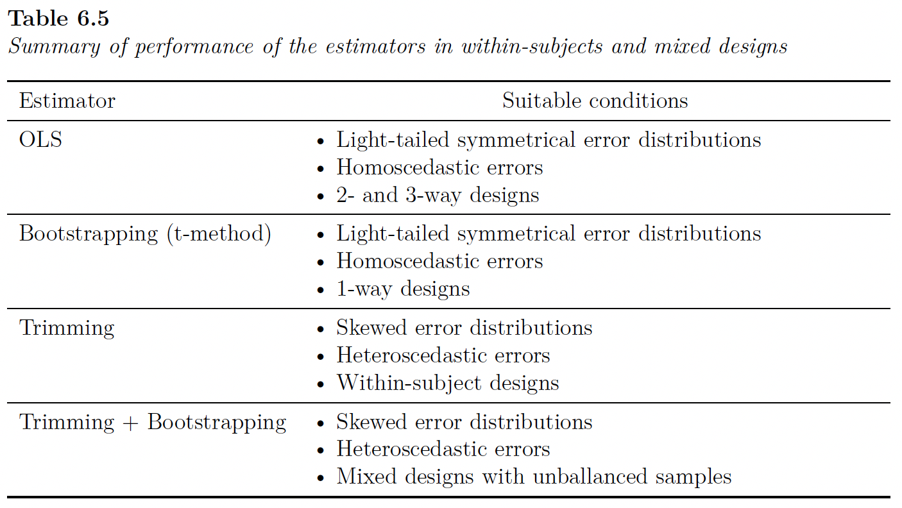
Revelations
“An easy way for the blind to go
A clever path for the fools who know
What do researchers know?
Sladekova & Field (in press)
- Sladekova, M. & Field, A. P. (in press). Sources of bias in general linear models: assessing researchers understanding and self-reported practice. Royal Society Open Science. osf.io/9xnsw
Participants
- 794 psychology researchers
- 438 unique universities across 55 countries and 42 states.
- 44.08% men, 42.19% women, 0.63% non-binary, and 0.13% genderqueer.
- Mean age = 40.01 (SD = 10.79).
- 46.73% faculty, 21.16% post-docs, 16.12% Ph.D., 3.53% non-academic
What do researchers know?
- Knowledge of OLS conditions
- 50 statements (10 per ‘assumption’, 5 True, 5 False)
- Rate from 0 (definitely false) to 10 (definitely true)
- Analytic practice
- 2 scenarios (1 experimental, 1 cross-sectional)
- List of assumptions
- For each one checked as relevant
- 0 = I do not check for violations of this assumption, nor do I apply any corrections
- 1 = I check for violations of this assumption, but I do not apply any corrections when I find that the assumption is violated.
- 2 = I do not check for violations of this assumption, but I apply corrections for potential violations anyway OR I check for violations of this assumption and I also apply corrections when I detect violations.
What do researchers know?
Linearity and additivity
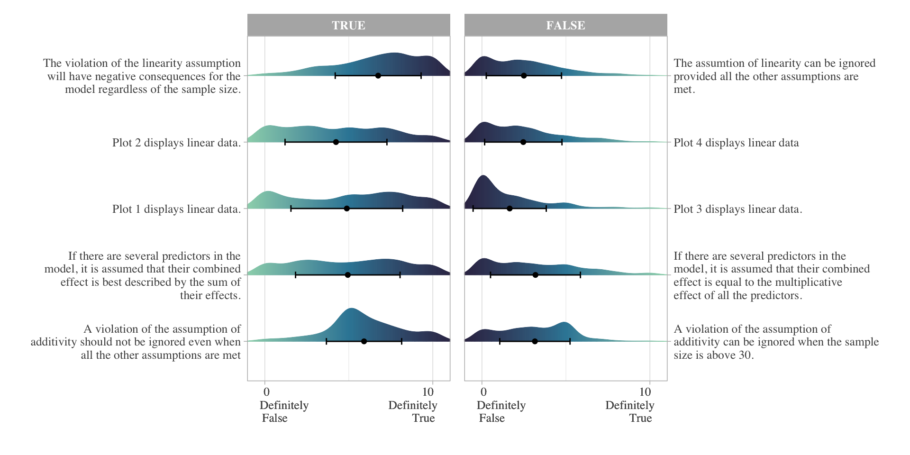
What do researchers know?
Outliers

What do researchers know?
Heteroscedasticity
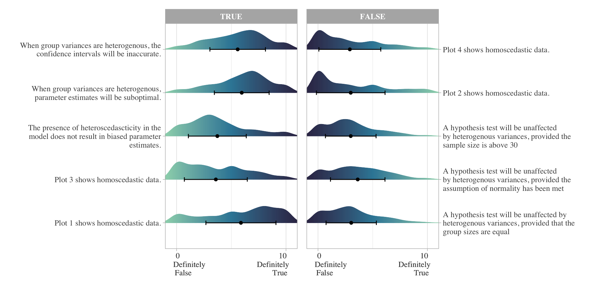
What do researchers know?
Independence
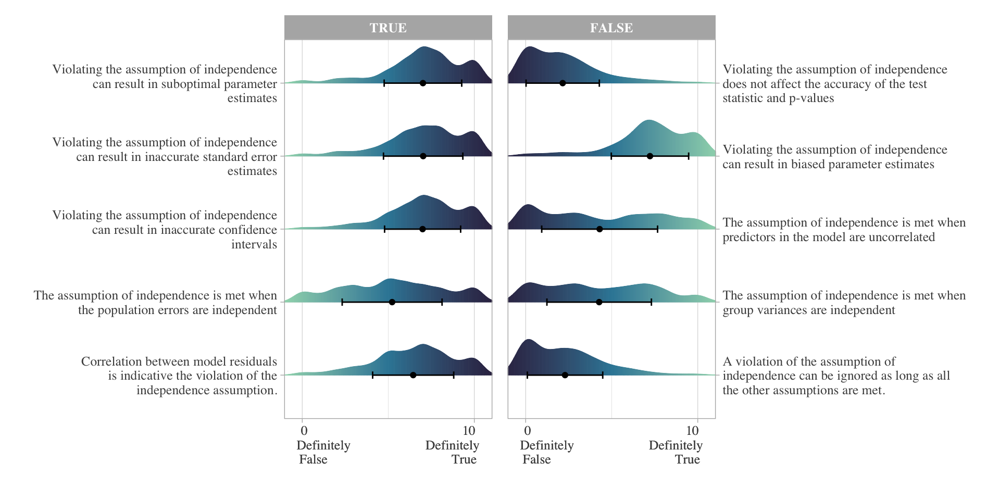
What do researchers know?
Normality

What do researchers say they do?
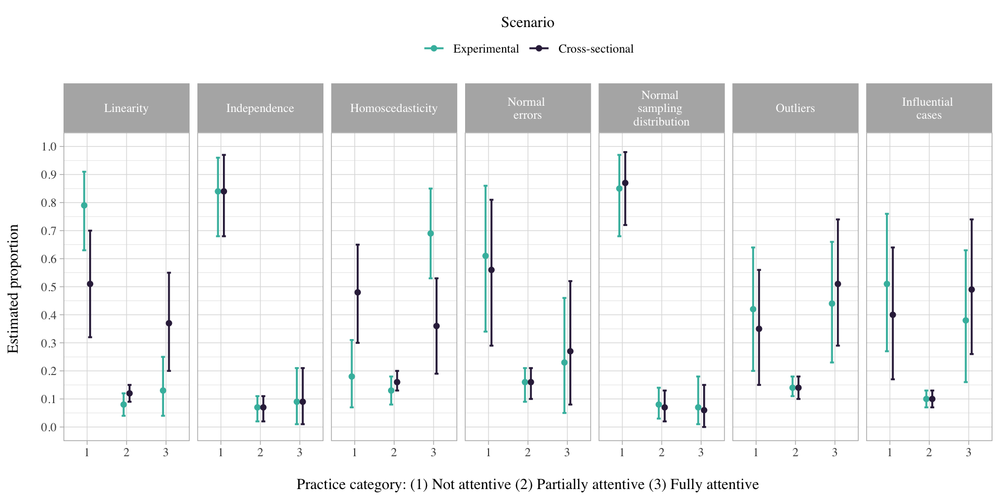
What do researchers say they do?
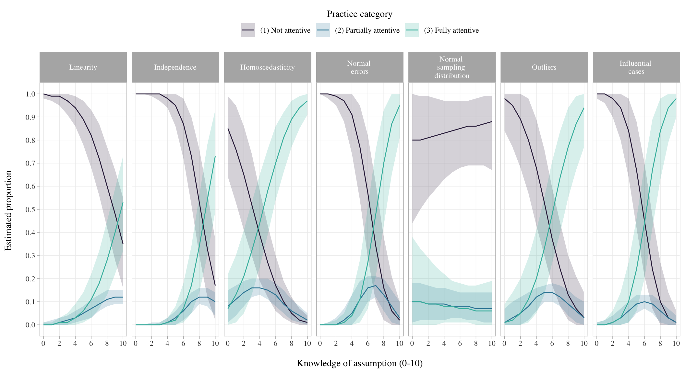
What do researchers actually do?
Sladekova & Field (in press)
- Sladekova, M., Poupa, V., & Field, A. P. (2026). Sources of bias in general linear models: Evaluating the analytic practice in psychological research. Royal Society Open Science, 13(2), 250076. doi: 10.1098/rsos.250076
- 188 psychology researchers analysed data from two scenarios
- Experimental
- Cross-sectional
- Analytic scripts and descriptions subsequently coded for the level of attentiveness to
- Outliers and influential cases
- Heteroscedasticity
- Non-normal model errors
What do researchers actually do?

Caught Somewhere in Time
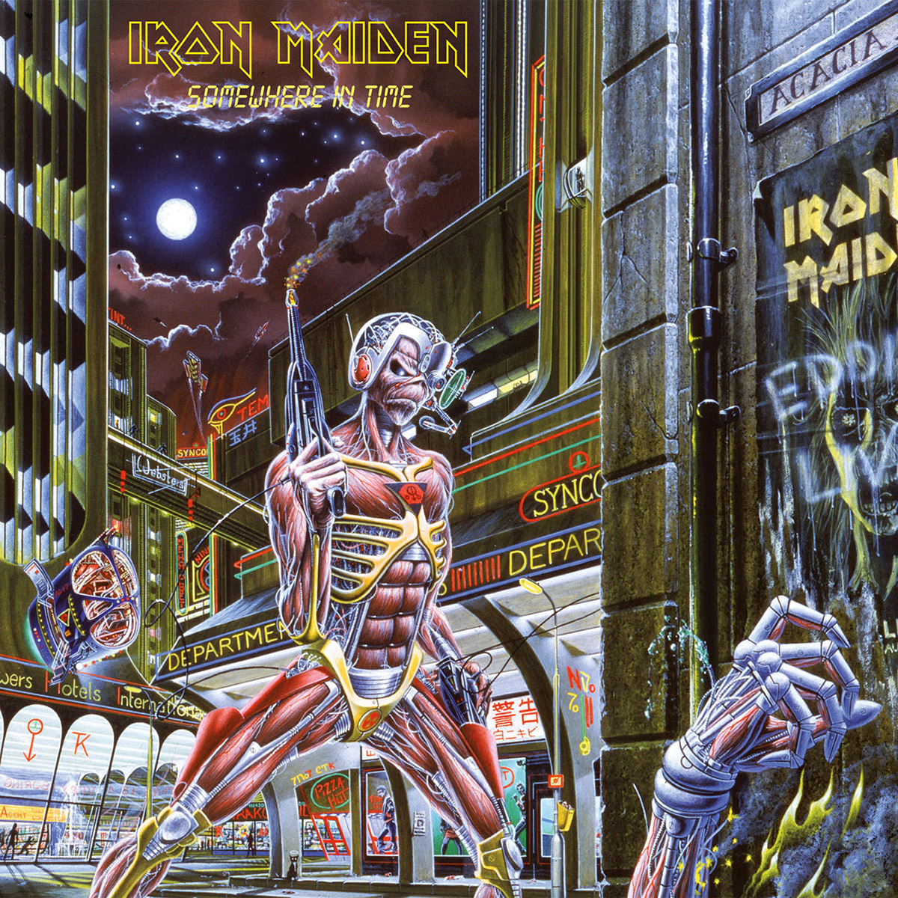
“Like a wolf in sheep’s clothing,
You try to hide your deepest sins,
Of all the things that you’ve done wrong”
Why?
- Statistics is hard
- Statistics takes time
- Statistics is boring
Incentive structures
Incentive structures
Disincentive (to get things correct) structures1
| Incentive | Intended effect | Actual effect | and also .. |
|---|---|---|---|
| Researchers rewarded for increased number of publications | Improve research productivity, provide a means of evaluating performance. | Avalanche of substandard, incremental papers; poor methods and increase in false discovery rates leading to a natural selection of bad science. | Focus on significance over effect size. |
| Researchers rewarded for increased number of citations. | Reward quality work that influences others. | Extended reference lists to inflate citations; reviewers request citation of their work through peer review. | Focus on significance over effect size. |
| Researchers rewarded for 'high impact' publications | Reward quality work that influences others. | Focus on surprising results. Bias towards un-hypothesised but interesting findings. | Focus on significance over effect size. |
| Researchers rewarded for increased grant funding | Ensure that research programs are funded, promote growth, generate overhead. | Increased time writing proposals and less time gathering and thinking about data. Overselling positive results and downplay of negative results. | Focus on significance over effect size. |
Questionable Research Practices1
| Activity | Self (highest %) | Other (highest %) |
|---|---|---|
| Fabricating data | 4.5 | 60.0 |
| Selective reporting | 12.1 | 69.3 |
| Dropping cases to benefit results | 15.3 | 20.3 |
| Terminating study at a time other than when planned | 33.7 | - |
| Fitting multiple models and reporting the most favourable | - | 45.8 |
| Using inappropriate designs | 13.5 | 39.2 |
- ‘Know not what they do’ errors
Consequences of the replication crisis
| Initiative | Explanation | Intended effect |
|---|---|---|
| Registered reports | Research accepted for publication before data collected | Removes incentive to find significance. Analysis plans/methods reviewed ahead of time. |
| Pre-registration | Research plans made public before data collected | Increases accountability. Reduced QRPs. Greater transparency when analysis plans changing. |
| Data/code sharing | Data/code posted on public repository | Errors more easily uncovered, secondary data analysis possible. |
| Statistical literacy | Common statistical (mis)practice is being discussed/debated | Fewer 'know not what they do' errors. Wider discussion of good practice. |
Brave New World
“Makes no sense of it all
Close this mind, dull this brain
Conclusion
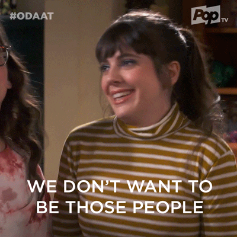